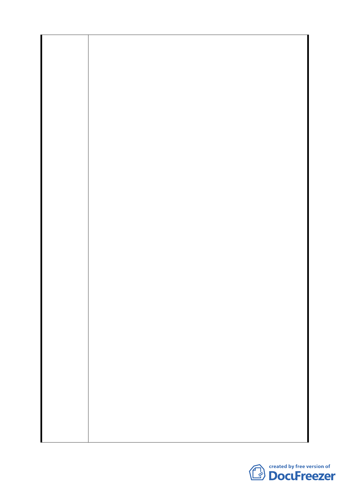

計畫案國中預定地直接改成為公園用地，建設成一較具規
模之『中央公園』，其份量由於集中而加重。世上許多大都
市一般皆設有此公園或廣場。配合公館路、奇岩路、丹鳳
山步道等親山衢徑，庶幾有如新北投公園之功能。目前許
多登山者多以中和禪寺前為集合處或休息站，以後可以移
到新的公園。而公園內也可以創造多種活動的空間。新的
公園可以親山又有親水小徑（目前即可能實行的，從既存
接近橋端而升高之硫磺路、延壽橋下面親水），功能多多。
4. 新計畫案中已經闡明磺港溪二側水泥護岸短期無法重塑為
自然護岸、增加生物孔隙及親水之可行性。顯然新計畫所
提出『景觀綠廊』之設想並不完備。如果據以施行，以後
難免產生事端。又提出與關渡平原及周邊山系銜接，為生
物建立一水路棲地遷徙網路的可行性。關渡平原開發目前
尚未明朗，其生物棲息成長狀態又未列數據；大業路、洲
美快速道路、工業區、中央南路、崇仁路早已封閉阻隔，
何來遷徙。長條狀『景觀綠廊』不如多功能『中央公園』
切合實際。
5. 新計畫案專注『景觀綠廊』，而忽略山洪排水。此問題不僅
是磺港溪而已。若能有（既存抽水站影響評估）來衡量，
或許能夠引證其重要性。奇岩社區古來就有兩條排水溝擔
負奇岩山西麓及丹鳳山東麓之雨水排洩。新計畫案在（公
園二）與（公園四）安排上，置於僅有一條洩洪道水溝岸
邊以及抽水站北側，同樣是不妥。再看原計畫案，整條水
道幾乎全部包含在（綠地）範圍內。奇岩山中有水泉，平
時可以用來灌溉區內樹木草坪，水道又有蓄水作用，不必
建造人工蓄水池，實在理想。如此安排不應給予變更。
6. 新計畫案之長條狀『河岸景觀綠廊』在社區道路系統中，
圍堵了大部分區內道路；不是成迷宮，就是製造許多此路
不通之情況。交通系統比原計畫案更不通暢。於防災避難
方面亦增加危害性。若在長條狀公園內設通路穿越，豈不
是把『景觀綠廊』弄得支離破碎。
7. 新計畫案建築規劃以及捷運奇岩站出口為『視點』，似有狹
隘短視之嫌。未能從整個北投區全面掌握，似有其不備之
處。丹鳳山、奇岩山、唭哩岸山、軍艦岩無時無刻不在注
視全社區；公館路、奇岩路、崇仰路、威靈頓山莊的居民
12